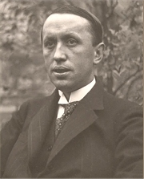
Karel Èapek
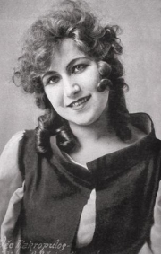
Olga Scheinpflugová, man�elka Karla Èapka
|
KAREL ÈAPEK
* 9. 1. 1890 (Malé Svatoòovice u Trutnova)
† 25. 12. 1938 (Praha)
Karel Èapek byl prvním èeskım spisovatelem svìtového vıznamu. Byl pøesvìdèenım demokratem, humanistou a liberálem. Jeho novináøská i literární tvorba je velmi rozsáhlá, ale pøesto se vyznaèuje vysokou kvalitou a myšlenkovou hloubkou. Zároveò je ètenáøsky atraktivní a velmi pestrá. Èapek varuje pøed nebezpeèím pøekotného technického vıvoje, válkou a totalitními re�imy. Nevìøí v revoluèní pøevraty. Cestu k øešení problémù spatøuje v ka�dodenní mravenèí práci. Ve své tvorbì oslavuje èinorodost, demokracii a tzv. „malého èlovìka“.
Èapek navštìvoval gymnázia v Hradci Králové, Brnì a Praze. Na Karlovì Univerzitì studoval filozofii, estetiku, dìjiny vıtvarného umìní a filologii. Èást studií strávil v Berlínì a Paøí�i. Poté se �ivil jako soukromı uèitel, knihovník v Národním muzeu a novináø. Èapek se hlásil k filozofickému pragmatismu. Zajímal se o avantgardní umìní, ale nesouhlasil s komunistickou ideologií. Pracoval jako redaktor Lidovıch novin, byl dramaturgem Vinohradského divadla a zalo�il èeskou poboèku PEN klubu. Ve vile bratøí Èapkù se scházeli tzv. páteèníci, prodemokraticky orientované osobnosti veøejného �ivota. Èapek varoval pøed diktátorskımi re�imy, které se dostávaly k moci v celé Evropì, pøedevším fašismem a nacismem, a válkou. Na sklonku �ivota musel èelit osobním útokùm èeskıch nacionalistù, které ještì zesílily po Mnichovu. O to intenzivnìji bránil principy demokracie. Nemocnı spisovatel nakonec podlehl zánìtu plic.
Èapkova tvorba má blízko k vitalismu. Oslava rozmanitosti, �ivota, drobnıch radostí i starostí a pracovitosti prostupuje celou jeho tvorbu. Stejnì tak se jeho díly prolíná úcta k èlovìku, lidské individualitì a názorové pluralitì. Pro jeho styl je charakteristickı laskavı humor a jazykové mistrovství.
|
Èapkova rodina
Èapkùv otec pracoval jako venkovskı lékaø. Jeho bratr Josef Èapek byl malíøem a spisovatelem. Sestra Helena Èapková se po ovdovìní provdala za básníka Josefa Palivce. Karel Èapek se o�enil s hereèkou Olgou Scheinpflugovou, dìti s ní nemìl. S bratrem Josefem Èapkem napsal øadu literárních dìl – povídkové soubory Krakonošova zahrada a Záøivé hlubiny a jiné prózy nebo dramata Ze �ivota hmyzu, Adam Stvoøitel a Lásky hra osudná. Pohádkou O tlustém pradìdeèkovi a loupe�nících pøispìl Josef Èapek do bratrovy knihy Devatero pohádek.
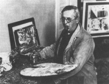
Josef Èapek, bratr Karla Èapka
Jaké byly osudy Josefa Palivce po roce 1948?
|
Karel Èapek a sci-fi
Hlavním tématem fantastickıch knih Karla Èapka je støet èlovìèenství s vìdou a technikou. Rùzné objevy a vynálezy, které mìly lidem usnadnit �ivot, se nakonec obracejí proti nim. Vìda pøedbíhá morálku. Nìkteøí lidé ji zneu�ívají ve svùj prospìch nebo neprospìch ostatních. V románu Krakatit je to stejnojmenná vıbušnina. V dramatu R.U.R. jde o Roboty, kteøí mìli za lidstvo pracovat, ale nakonec ho znièí. Podobné motivy najdeme v románech Továrna na Absolutno nebo Válka s Mloky a dramatu Vìc Makropulos.
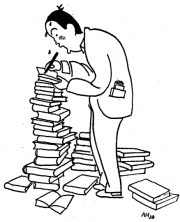
Adolf Hoffmeister: Karel Èapek
|
Karel Èapek: Krakatit
Hlavním hrdinou románu Krakatit je in�enır Prokop, kterı objevil vıbušninu s nevídanou nièivou silou. Pøi zkoumání Krakatitu se zraní a blouzní v horeèkách. Dávnému pøíteli Tomšovi dokonce prozradí chemické slo�ení Krakatitu. Ten se rozhodne na nové tøaskavinì vydìlat a odjí�dí pryè. Prokop se léèí u Tomšova otce a zamiluje se do jeho dcery Anèi. V novinách objeví inzerát øeditele vojenské továrny, kterı po nìm pátrá. Dozví se, �e v továrnì pracoval Tomeš, ale kdy� ji navštíví, je uvìznìn a nucen k vydání svého vynálezu. Prokopovi se podaøí utéci do Itálie, kde poznává skupinou anarchistù, která doká�e Krakatit odpálit na dálku pomocí speciálního vlnového záøení a chce s jeho pomocí ovládnout svìt. Jeden z nièivıch vıbuchù zabije i Tomše. Prokop je otøesen a rozhodne se, �e od základù zmìní svùj �ivot. Nechce u� vynalézat vìci, které by mohly zabíjet lidi, bude jim pomáhat.
Èapek ve svém románu vyu�ívá pohádkové prvky. Pøi útìku Prokopovi pomáhá princezna. Krakatit na dálku odpálí zlı Daimon. Nakonec kouzelnı dìdeèek Prokopovi ukazuje, jak hluboce se mılil ve svém dosavadním �ivotì, a naznaèuje mu správnou cestu.
|
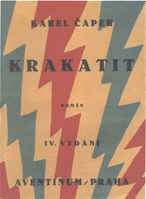
Kni�ní obálka od Josefa Èapka pro bratrùv román Krakatit
Charakterizuj postavu Daimona. Svùj názor dolo� citáty z knihy.
Jak vzniklo slovo Krakatit?
2. svìtovou válku ukonèilo pou�ití nièivé vıbušniny. O jakou událost šlo? Co si o ní myslíš?
Které moderní zbranì ohro�ují samotnou existenci �ivota na Zemi? Co proti tomu mù�eme dìlat?
O èem pojednává román Továrna na Absolutno?
|
Karel Èapek dramatik
Prvním dramatem Karla Èapka byl vitalistickı Loupe�ník. Celosvìtovou slávu mu zajistila hra R.U.R. Drama o touze po nesmrtelnosti Vìc Makropulos je polemikou s Shawovou hrou Zpìt k Methusalemovi. S bratrem Josefem napsal satiru Ze �ivota hmyzu a hry Lásky hra osudná a Adam Stvoøitel. Jeho tvorbu uzavírají protiváleèná dramata Bílá nemoc a Matka. Èapek byl dramaturgem a re�isérem Vinohradského divadla. Psal také filmové scénáøe. Je autorem knih Jak vzniká divadelní hra a Jak se dìlá film, které jsou souèástí trilogie Jak se co dìlá. Posmrtnì vyšel vıbor z Èapkovıch novinovıch èlánkù Divadelníkem proti své vùli.
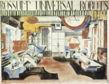
Feuersteinùv scénografickı návrh pro hru R.U.R.
|
Karel Èapek: R.U.R.
Utopické drama R.U.R. se odehrává na osamìlém ostrovì, kde se nachází továrna Rossum’s Universal Robots na vırobu umìlıch bytostí, které mohou dìlat tì�kou práci místo lidí. Na ostrov pøijí�dí prezidentova dcera Helena Gloryová, která usiluje o zlidštìní Robotù. Ti sice mají vysokı intelekt i velkou fyzickou sílu, ale chybí jim vùle a cit. Helena se vdá za øeditele továrny Domina a na ostrovì zùstává. Po deseti letech lidé zcela pøestali pracovat, zpohodlnìli a nemohou mít ani dìti. Roboti se proti nim vzbouøí a chtìjí lidstvo znièit. Vtrhnou na ostrov a jeho obyvatele povra�dí. Ušetøí pouze stavitele Alquista, proto�e na rozdíl od ostatních nepøestal pracovat rukama. Chtìjí po nìm, aby obnovil vırobu Robotù, ale Alquistovi se to nedaøí, proto�e Helena spálila všechny plány, aby donutila lidi vrátit se k døívìjšímu zpùsobu �ivota. Po lidstvu hrozí zánik i Robotùm. Mezi Roboty Primusem a Helenou se ale zrodí milostnı cit. Nadìji, �e �ivot na Zemi neskonèí, skıtá nová generace Robotù, která se zrodí z jejich lásky.
Drama R.U.R. slavilo úspìch nejen na èeskıch jevištích, ale bìhem nìkolika let obletìlo celı svìt, hrálo se v USA i Japonsku. Z Èapka se rázem stal uznávanı spisovatel svìtového formátu. Slovo robot vymyslel jeho bratr Josef. Díky úspìchu hry proniklo do øady svìtovıch jazykù.
|
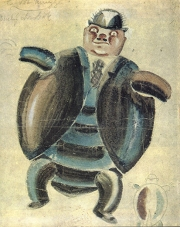
Kostımní návrh Josefa Èapka pro hru Ze �ivota hmyzu
Jakı je rozdíl mezi robotem, androidem a kyborgem?
Které další názvy pro umìlé bytosti znáš?
Která Èapkova díla byla zfilmována? Jak se ti tyto adaptace líbily?
Srovnej hry Vìc Makropulos a Zpìt k Methusalemovi.
Co ukradl Loupe�ník v Èapkovì høe?
Co víš o Èapkovì man�elce a jeho bratrovi?
|
Karel Èapek novináø
Èapek psal do Lidovıch novin rùzné èlánky na pomezí �urnalistiky a beletrie – úvodníky, komentáøe, sloupky, kurzívy, kritiky i veršované rozhlásky. Nejvíce ale proslul jako fejetonista. Jeho drobná novináøská tvorba vyšla v knihách Kritika slov, O nejbli�ších vìcech nebo Zahradníkùv rok, posmrtnì pak ve vıborech Mìl jsem psa a koèku, Kalendáø, O lidech, Ratolest a vavøín, Obrázky z domova, Vìci kolem nás, Sloupkovı ambit, Místo pro Jonathana nebo Na bøehu dnù. Cestopisné èrty shrnul do knih Italské listy, Anglické listy, Vılet do Španìl, Obrázky z Holandska a Cesta na sever. Posmrtnì vyšly ještì Obrázky z domova. Postøehy z redakèní práce vtìlil do knihy Jak se dìlají noviny, která je souèástí trilogie Jak se co dìlá. Vrcholem Èapkovy novináøské tvorby byly Hovory s T. G. Masarykem.
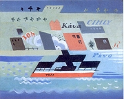
Josef Èapek: Parník
|
Èapkovy fejetony z cest
Karel Èapek hodnì cestoval po Evropì. Nebyl to ale �ádnı dobrodruh, spíše pozornı a pouèenı turista. Ve svıch fejetonech z cest zachytil nejznámìjší místa dané zemì. Nezapomnìl ani na (pro jeho tvorbu pøíznaèné) drobné postøehy ze �ivota lidí. Nìkdy také podává obšírné vıklady o památkách, ve kterıch nezapøel své vzdìlání estetika. V zahranièí se osobnì setkal i s øadou vıznamnıch spisovatelù.
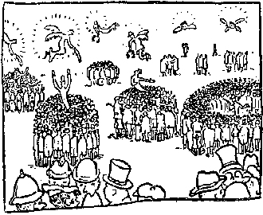
Karel Èapek: Hyde Park
|
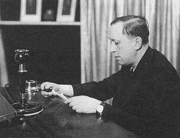
Karel Èapek v rozhlase
Co Èapka zaujalo na Hyde Parku? Existuje v Èechách jeho obdoba?
Napiš fejeton ze svıch cest do zahranièí.
Èapek èasto vybízel ètenáøe k charitì. Co to je?
Které knihy si Karel Èapek sám ilustroval?
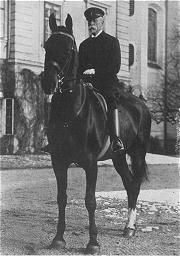
Prezident Masaryk na koni
|
Karel Èapek povídkáø
Èapek zaèal psát s bratrem Josefem vitalistické povídky. Jejich spoleèná tvorba vyšla v knihách Záøivé hlubiny a jiné prózy a Krakonošova zahrada.
Sám vydal povídkovou knihu Bo�í muka a expresionisticky ladìné Trapné povídky. Detektivní a tajemné povídky shrnul do knih Povídky z jedné kapsy a Povídky z druhé kapsy. Další krátké prózy vyšly v knihách
Apokryfy (Kniha apokryfù) a Bajky a podpovídky. Samostatnì vyšla novela Skandální aféra Josefa Holouška.
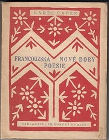
|
Karel Èapek: Povídky z jedné kapsy
Èapkovy knihy Povídky z jedné kapsy a Povídky z druhé kapsy spojuje �ánr detektivky. Ve vìtšinì pøíbìhù øeší policista nebo jiné postavy nìjakou kráde�, smrt èi záhadu. Ne v�dy se ale podaøí vše vysvìtlit pomocí zdravého rozumu. Nìkdy musí nastoupit intuice, jindy problém zùstává otevøenı.
Rezavı høebík Haha, píchnul jsem ho do paty! A pak se øíká, �e nejsem k potøebì!
Stono�ka Jen to, jen to bych chtìla vìdìt... jsou-li na jinıch planetách také stono�ky.
Vládce Já vám naøizuju, abyste mnì platili, a vy mne platíte, abych vám porouèel.
Hlemı�ï Na pøíklad pøímka je nesprávná, jeliko� to není spirála.
Mravenec Já neválèím. To válèí mraveništì.
Balvan Jaro? Hm, to pøejde. Co já jsem vidìl jar a nebylo to k nièemu.
Kritik Naè bych se díval, jakı svìt je? Mnì staèí vìdìt, jakı by mìl bıt. (Bajky a podpovídky)
|
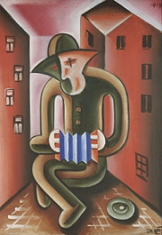
Josef Èapek: Harmonikáø
Srovnej postavy in�enıra, básníka a policisty.
Co je apokryf?
O èem pojednává Èapkùv apokryf O úpadku doby?
Napiš vlastní apokryf nebo detektivní povídku.
Co je aforismus?
Èím se vyznaèuje bajka?
Jak se ti líbí Èapkovy povídky?
|
Karel Èapek romanopisec
Vrcholem Èapkovy románové tvorby je tzv. noetická trilogie Hordubal, Povìtroò a Obyèejnı �ivot. Tyto romány nespojují postavy nebo dìj, ale vypravìèskı pøístup. Autor obhlí�í pøíbìh ze všech stran, nabízí rùzné pohledy na jednotlivé postavy i události. Koneènı názor si musí udìlat ètenáø sám. Podobnì je vystavìn i poslední Èapkùv román �ivot a dílo skladatele Foltına, kterı zùstal torzem, a nìkolik jeho povídek (Šlépìje, Básník...) i dramat. Tato metoda bıvá nìkdy oznaèována jako kubistická. Mù�eme v ní spatøovat i Èapkùv relativismus, kterı zpochybòuje, �e by existovala jediná pravda, proto�e stejnou vìc mù�e ka�dı èlovìk vidìt jinak. Èapek napsal té� romány Továrna na Absolutno, Krakatit, Válka s Mloky a První parta.
|
Karel Èapek: Hordubal
Román Hordubal se odehrává na Podkarpatské Rusi. Titulní hrdina Juraj Hordubal odjel za prací do Ameriky. Po osmi letech se vrací na svùj statek k man�elce Polanì a dcerce Hafii. Rodina ale u� �ije jinım �ivotem. O Hordubalovo hospodáøství peèuje najatı èeledín Štìpán Manya, kterı není lhostejnı ani Polanì. I Hafie ho má radši ne� otce. Hordubal èeledína vy�ene a sám se stará o celı statek. Jednoho dne je Hordubal nalezen mrtev ve své posteli. Pøípad vypadá jasnì – vrahem je Štìpán, se kterım èeká Polana dítì. Bìhem vyšetøování i soudního procesu se ale objevuje stále více nesrovnalostí, napøíklad o vra�edné zbrani nebo ve vıpovìdích svìdkù. Ka�dı z úèastníkù vidí pøípad jinak. Porota nakonec odsoudí Štìpána k do�ivotí a Polanu ke 12 letùm tì�kého �aláøe.
|
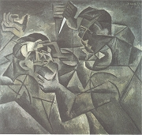
Bohumil Kubišta: Vra�da
Srovnej pohledy jednotlivıch postav na Hordubala a jeho zavra�dìní.
Co se stalo s Hafií po soudním procesu?
Èapka k románu inspiroval tento novinovı èlánek. Srovnej ho s autorovou knihou.
Které postavy vystupují v románu Povìtroò?
Co je povìtroò?
|
Karel Èapek dìtem
Pro dìti napsal Èapek knihy Dášeòka èili �ivot štìnìte a Devatero pohádek. V jeho pohádkách sice vystupují tradièní nadpøirozené bytosti, ale jsou konfrontovány s moderní civilizací. Starı pohádkovı svìt se pøe�il a vodník, hejkal, rusalka nebo èernoknì�ník nakonec nacházejí své nové místo v souèasné spoleènosti. Namísto strašení se zaènou vìnovat prospìšné práci pro lidi.
|
Karel Èapek: Dášeòka èili �ivot štìnìte
Èapkovu knihu Dášeòka tvoøí tøi èásti. První sleduje štìnì Dášeòku od narození a� do chvíle, kdy opouští svou matku fenu Iris a autorovu rodinu. Druhá èást nese název Jak se fotografuje štìnì. Závìreèná èást obsahuje pohádky o psech.
Karel Èapek svou knihu doprovodil vlastními ilustracemi a fotografiemi Dášeòky.
|
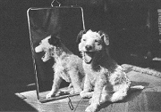
Karel Èapek: Pøed zrcadlem
Co Dášeòka umìla hned po narození a co se musela nauèit?
Dokonèi pohádku o Alíkovi.
Které zvíøátko chováte doma? Zkus o nìm nebo pro nìj nìco napsat.
Znáš nìjaké básnì, pøísloví nebo pøíbìhy, ve kterıch toto zvíøe vystupuje?
Jaké zvíøe bys chtìl/a mít? Proè?
|
Karel Èapek proti totalitì
Èapek byl dùslednım obhájcem demokracie a ve svıch èláncích i polemikách její ideály v�dy bránil – známá je jeho sta� Proè nejsem komunistou nebo kniha Hovory s T. G. Masarykem. Èapek vystupoval proti komunismu, nacionalismu i klerikálùm. Po nástupu italského fašismu a nìmeckého nacismu k moci si uvìdomil hrozby podobnıch totalitních re�imù. Varoval pøed nimi nejen jako novináø, ale také ve svıch umìleckıch dílech z posledního tvùrèího období – románu Válka s Mloky nebo dramatech Bílá nemoc a Matka. Díky svım antifašistickım postojùm musel èelit nevybíravım urá�kám nacionalistù, napøíklad Jaroslava Durycha. Otøesem pro nìj byl Mnichov. Brzy po nìm umírá na zánìt plic.
|
Karel Èapek: Válka s Mloky
Román Válka s Mloky reaguje na rostoucí hrozby fašismu. Kapitán van Toch objeví na jednom ostrovì podivné moøské tvory, kteøí vynikají inteligencí, doká�ou pracovat s nástroji a snadno se nauèí mluvit. Námoøník se spojí s prùmyslníkem Bondym a spoleènì distribuují Mloky do celého svìta jako levnou pracovní sílu. Èasem se Mlokùm dostane i vzdìlání, ale také se stávají souèástí vojsk. Jak Mlokù pøibıvalo, potøebovali získat více prostoru v oceánech, a proto zaèali likvidovat pobøe�í. Karta se obrátila a vùdce Mlokù chce po lidstvu, aby jim slou�ilo.
Knihu doprovázejí novinové vıstøi�ky o Mlocích, které shroma�ïoval pan Povondra, vrátnı v Bondyho podniku. Pøipomíná tak kolá� slo�enou z rùznorodıch textù.
|
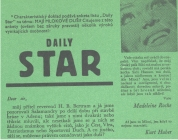
Ukázka z knihy Válka s Mloky
Co si bere na mušku kapitola Der Nordmolch?
Charakterizuj pana Povondru.
Po roce 1948 bylo dílo Karla Èapka odmítáno. Proè?
Pøeèti si Èapkùv èlánek Proè nejsem komunistou. Se kterımi názory souhlasíš a se kterımi ne? Proè?
|
Další tvorba Karla Èapka
Èapek byl opravdu plodnım autorem. S Neumannem vydává Almanach na rok 1914. Vystupuje proti generaci kolem Moderní revue a Šaldovi, kterı jeho dílo nedokázal docenit. Jako vystudovanı estetik psal vıtvarné, divadelní i literární kritiky. Známá je jeho sta� Zatykaè na vìèného studenta Roberta Davida. Literární teorii se vìnoval v úvahách Marsyas èili Na okraj literatury. Pøeklady básní shrnul do knihy Francouzská poezie nové doby. Zvláštì dùle�itı byl pøeklad Apollinairova Pásma, kterı zásadnì ovlivnil èeskou avantgardu. Èapek je autorem odbornıch pojednání Pragmatismus èili Filozofie praktického �ivota a Objektivní metoda v estetice se zøením k vıtvarnému umìní. Politické názory zahrnul do publikace O vìcech obecnıch èili Zoon politikon. Jeho soukromá korespondence man�elce vyšla pod názvem Listy Olze.
|
Karel Èapek: Marsyas èili Na okraj literatury
V knize esejí Marsyas èili Na okraj literatury se Èapek zamìøil na populární literární �ánry, které oficiální vìda pova�ovala za okrajové, a proto se jim pøíliš nevìnovala. Autor nabízí ètenáøùm zajímavé postøehy o grafomanii, novinách, nekorektní polemice, anekdotì a lidovém humoru, pøíslovích, pra�skıch popìvcích, dìtskıch øíkadlech, pohádkách, pornografii, lidovıch kalendáøích, detektivkách, èervené knihovnì a proletáøském umìní. Poslední zamyšlení nese název Chvála øeèi èeské, Èapek v nìm oznaèuje rodnou øeè za „samu duši národa“.
Èapek miloval práci na zahradì své vily ve Str�i u Dobøíše. Sbíral nahrávky etnické hudby z celého svìta. Neúspìšnì se pokoušel o politickou kariéru. Byl prvním pøedsedou èeskoslovenského PEN klubu. Organizoval setkání páteèníkù ve své vile na Vinohradech. Èapkova èinorodost, rozmanitost zájmù i kvalita jeho díla je opravdu obdivuhodná!
|
Které z Èapkovıch postøehù platí i pro souèasné noviny?
Chtìl/a bys pracovat v novinách? Proè?
Kdo byl Marsyas?
Vysvìtli vıznam slova pragmatik. Co víš o filozofickém pragmatismu?
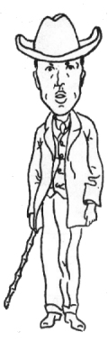
Èapkova autokarikatura
|
Internetové stránky
Èapek, portál
Èapek: R.U.R.
Èapek: Bajky a podpovídky, Devatero pohádek, Hordubal, Jak se co dìlá, Matka, O lidech, Povìtroò, Povídky z jedné kapsy, Povídky z druhé kapsy, První parta, Továrna na Absolutno, Trapné povídky, Válka s mloky, Zahradníkùv rok, �ivot a dílo skladatele Foltına
Èapek: Dášeòka, Krakatit
Èapek: O pìti chlebích (Kniha apokryfù)
Èapek: Proè nejsem komunistou
Èapek: Zatykaè na vìèného studenta Roberta Davida
Rulf: Krakatit, èlánek
Puchriková: Válka s mloky..., studie
Foffová: Karel Èapek v uèebnicích..., studie
Èapkové: Krakonošova zahrada, Záøivé hlubiny a jiné prózy, Juvenilie
Exkurze
Památník Karla Èapka, Str�
Tipy
Èapkova sbírka etnické hudby
Spoleènost bratøí Èapkù
Cena Karla Èapka
Slomek: Olga Scheinpflugová, èlánek
|
Doporuèená èetba
Bibliografie Karla Èapka, Academia, Praha 1990
Buriánek, František: Karel Èapek, ÈSS, Praha 1988
Èapek, Karel: Listy Olze, Praha 1971
Èapek, K.: V zajetí slov, Svoboda, Praha 1969
Èapková, Helena: Moji milí bratøi, ÈSS, Praha 1962
Èapkové, K. a J.: Filmová libreta, Odeon, Praha 1989
Halík, Miroslav: Karel Èapek, �ivot a dílo v datech, Academia, Praha 1983
Kábrt, Jan: Krakonošova zahrada bratøí Èapkù, Praha 1985
Karel Èapek a èeskı jazyk, Praha 1990
Karel Èapek fotografuje..., Novináø, Praha 1989
Karel Èapek ve fotografii, Praha 1991
Klíma, Ivan: Velkı vìk chce mít té� velké mordy, �ivot a dílo Karla Èapka, Academia, Praha 2001
Ko�mín, Zdenìk: Zvìtšeniny ze stylu bratøí Èapkù, Praha 1989
Králík, Oldøich: První øada v díle Karla Èapka, Profil, Ostrava 1972
Kudìlka, Viktor: Boje o Karla Èapka, Praha 1987
Maleviè, Oleg: Bratøi Èapkové, pøel. H.Štìpánková, Praha 1999
Matuška, Alexander: Èlovìk proti zkáze, Praha 1963
Menec, Zdenìk: Krajem bratøí Èapkù, Albatros, Praha 1983
Nikolskij, Sergej: Fantastika a satira v díle Karla Èapka, ÈSS, Praha 1978
Scheinpflug, Karel: Mùj švagr Karel Èapek, Kruh, Hradec Králové, Praha 1991
Scheinpflugová, Olga: Èeskı román, 1991
Spisy Karla Èapka (24 svazkù)
Šulcová, Marie: Èapci, Melantrich, Praha 1998
Viktor Dyk, St.K.Neumann, bratøi Èapkové, Korespondence z let 1905-1918, NÈSAV, Praha 1962
Vlašín, Štìpán a kol.: Kniha o Èapkovi, ÈSS, Praha 1988
Voèadlo, Otakar: Anglické listy Karla Èapka, Academia, Praha 1975
Všeteèka, František: Dílna bratøí Èapkù, Votobia, Olomouc 1999
|
Jakı je tvùj názor na Karla Èapka a jeho díla?
Které kapitoly této uèebnice citují díla Karla Èapka?
Seøaï Èapkovy knihy podle roku vydání.
Vypracuj písemnı referát o nìkteré z uvedenıch knih.
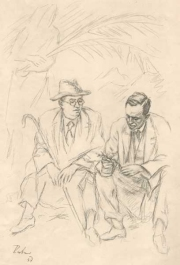
Václav Rabas: Bratøi Èapkové
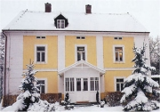
Èapkova vila ve Str�i u Dobøíše
|
|